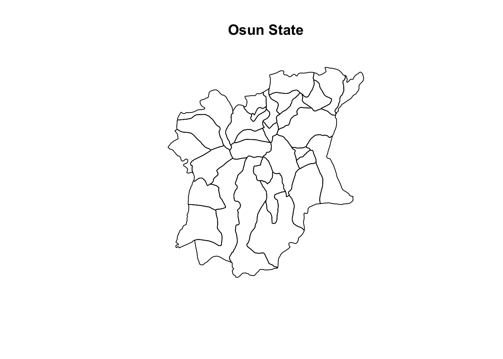
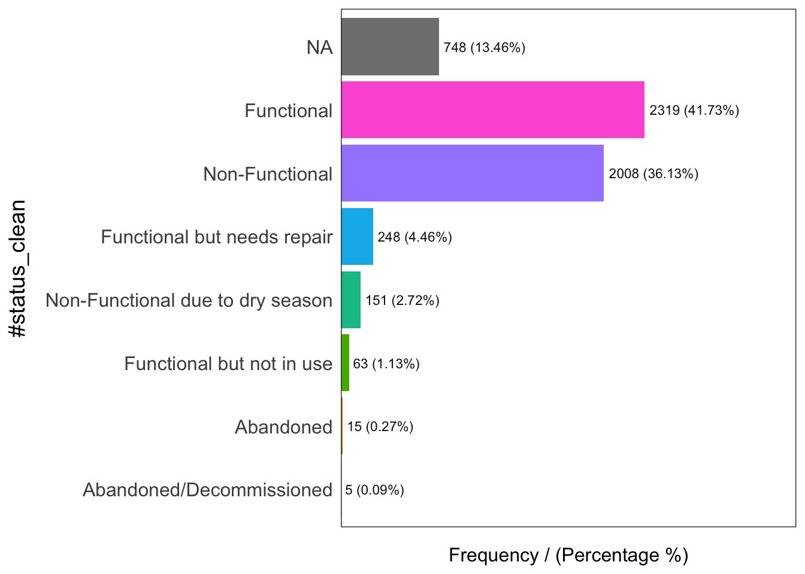
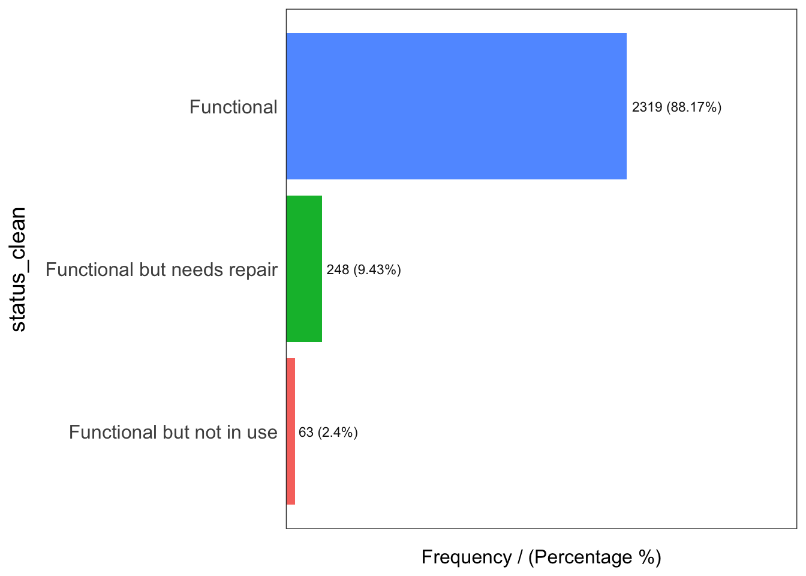
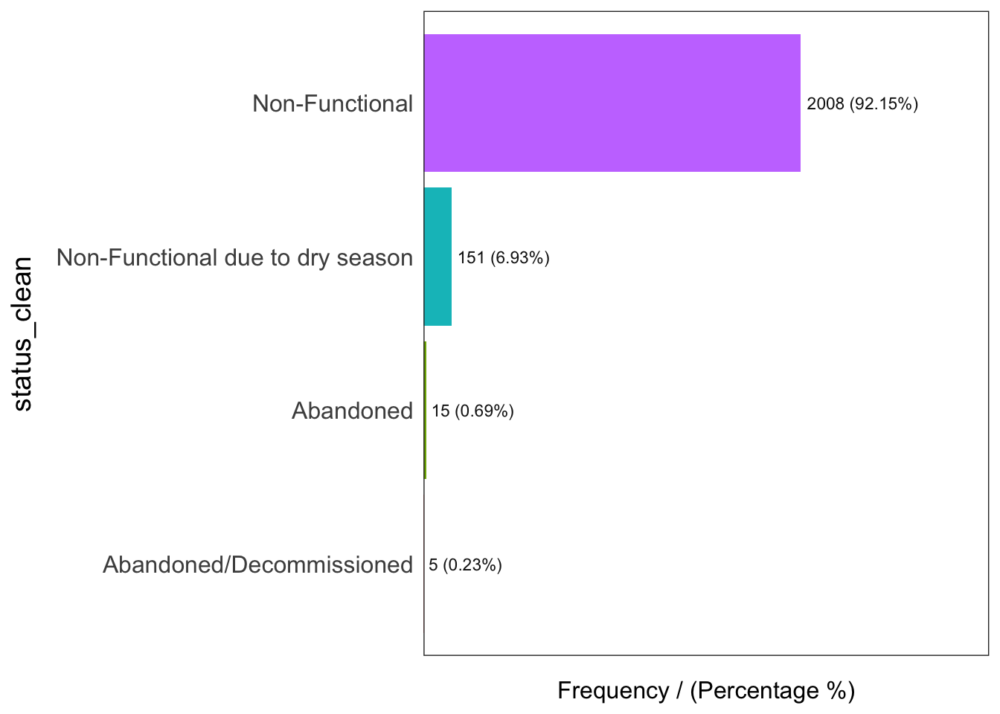
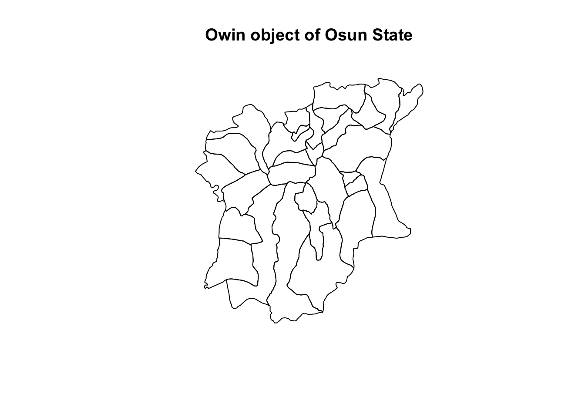

pacman::p_load(sf, maptools, raster, spatstat, tmap, kableExtra, tidyverse, funModeling)Take Home Exercise 1
1.0 Overview
1.1 Background
This analysis aims to apply appropriate spatial point patterns analysis methods to discover the geographical distribution of functional and non-function water points and their co-locations if any in Osun State, Nigeria.
1.2 Task
Exploratory Spatial Data Analysis (ESDA)
Second-order Spatial Point Pattern Analysis
Spatial Correlation Analysis
2.0 Setup
2.1 Import Packages
sf
tidyVerse
tmap, maptools, kableExtra - Used for visualizing dataframes and plots
3.0 Data Wrangling
3.1 Datasets Used
Code
# initialise a dataframe of our geospatial and aspatial dataset details
datasets <- data.frame(
Type=c("Geospatial",
"Geospatial",
"Geospatial",
"Geospatial",
"Geospatial",
"Geospatial",
"Geospatial",
"Geospatial",
"Geospatial",
"Geospatial",
"Geospatial",
"Geospatial",
"Geospatial",
"Geospatial",
"Aspatial"),
Name=c("geoBoundaries-NGA-ADM2",
"geoBoundaries-NGA-ADM2",
"geoBoundaries-NGA-ADM2",
"geoBoundaries-NGA-ADM2",
"geoBoundaries-NGA-ADM2",
"geoBoundaries-NGA-ADM2",
"nga_admbnda_adm2_osgof_20190417",
"nga_admbnda_adm2_osgof_20190417",
"nga_admbnda_adm2_osgof_20190417",
"nga_admbnda_adm2_osgof_20190417",
"nga_admbnda_adm2_osgof_20190417",
"nga_admbnda_adm2_osgof_20190417",
"nga_admbnda_adm2_osgof_20190417",
"nga_admbnda_adm2_osgof_20190417",
"WPdx"),
Format=c(".dbf",
".geojson",
".prj",
".shp",
".shx",
".topojson",
".CPG",
".dbf",
".prj",
".sbn",
".sbx",
".shp",
".shp",
".shx",
".csv"),
Source=c("[geoBoundaries](https://www.geoboundaries.org/index.html#getdata)",
"[geoBoundaries](https://www.geoboundaries.org/index.html#getdata)",
"[geoBoundaries](https://www.geoboundaries.org/index.html#getdata)",
"[geoBoundaries](https://www.geoboundaries.org/index.html#getdata)",
"[geoBoundaries](https://www.geoboundaries.org/index.html#getdata)",
"[geoBoundaries](https://www.geoboundaries.org/index.html#getdata)",
"[Humanitarian Data Exchange](https://data.humdata.org/dataset/cod-ab-nga)",
"[Humanitarian Data Exchange](https://data.humdata.org/dataset/cod-ab-nga)",
"[Humanitarian Data Exchange](https://data.humdata.org/dataset/cod-ab-nga)",
"[Humanitarian Data Exchange](https://data.humdata.org/dataset/cod-ab-nga)",
"[Humanitarian Data Exchange](https://data.humdata.org/dataset/cod-ab-nga)",
"[Humanitarian Data Exchange](https://data.humdata.org/dataset/cod-ab-nga)",
"[Humanitarian Data Exchange](https://data.humdata.org/dataset/cod-ab-nga)",
"[Humanitarian Data Exchange](https://data.humdata.org/dataset/cod-ab-nga)",
"[ WPdx Global Data Repositories](https://www.waterpointdata.org/access-data/)")
)
# with reference to this guide on kableExtra:
# https://cran.r-project.org/web/packages/kableExtra/vignettes/awesome_table_in_html.html
# kable_material is the name of the kable theme
# 'hover' for to highlight row when hovering, 'scale_down' to adjust table to fit page width
library(knitr)
library(kableExtra)
kable(datasets, caption="Datasets Used") %>%
kable_material("hover", latex_options="scale_down")| Type | Name | Format | Source |
|---|---|---|---|
| Geospatial | geoBoundaries-NGA-ADM2 | .dbf | [geoBoundaries](https://www.geoboundaries.org/index.html#getdata) |
| Geospatial | geoBoundaries-NGA-ADM2 | .geojson | [geoBoundaries](https://www.geoboundaries.org/index.html#getdata) |
| Geospatial | geoBoundaries-NGA-ADM2 | .prj | [geoBoundaries](https://www.geoboundaries.org/index.html#getdata) |
| Geospatial | geoBoundaries-NGA-ADM2 | .shp | [geoBoundaries](https://www.geoboundaries.org/index.html#getdata) |
| Geospatial | geoBoundaries-NGA-ADM2 | .shx | [geoBoundaries](https://www.geoboundaries.org/index.html#getdata) |
| Geospatial | geoBoundaries-NGA-ADM2 | .topojson | [geoBoundaries](https://www.geoboundaries.org/index.html#getdata) |
| Geospatial | nga_admbnda_adm2_osgof_20190417 | .CPG | [Humanitarian Data Exchange](https://data.humdata.org/dataset/cod-ab-nga) |
| Geospatial | nga_admbnda_adm2_osgof_20190417 | .dbf | [Humanitarian Data Exchange](https://data.humdata.org/dataset/cod-ab-nga) |
| Geospatial | nga_admbnda_adm2_osgof_20190417 | .prj | [Humanitarian Data Exchange](https://data.humdata.org/dataset/cod-ab-nga) |
| Geospatial | nga_admbnda_adm2_osgof_20190417 | .sbn | [Humanitarian Data Exchange](https://data.humdata.org/dataset/cod-ab-nga) |
| Geospatial | nga_admbnda_adm2_osgof_20190417 | .sbx | [Humanitarian Data Exchange](https://data.humdata.org/dataset/cod-ab-nga) |
| Geospatial | nga_admbnda_adm2_osgof_20190417 | .shp | [Humanitarian Data Exchange](https://data.humdata.org/dataset/cod-ab-nga) |
| Geospatial | nga_admbnda_adm2_osgof_20190417 | .shp | [Humanitarian Data Exchange](https://data.humdata.org/dataset/cod-ab-nga) |
| Geospatial | nga_admbnda_adm2_osgof_20190417 | .shx | [Humanitarian Data Exchange](https://data.humdata.org/dataset/cod-ab-nga) |
| Aspatial | WPdx | .csv | [ WPdx Global Data Repositories](https://www.waterpointdata.org/access-data/) |
3.2 Geospatial Data
3.2.1 Load Data
NGA <- st_read("data/geospatial",
layer = "nga_admbnda_adm2_osgof_20190417") %>%
filter(ADM1_EN == "Osun") %>%
st_transform(crs = 26392)Reading layer `nga_admbnda_adm2_osgof_20190417' from data source
`/Users/shambhavigoenka/Desktop/School/Geo/IS415-GAA/take_home_ex/take_home_ex01/data/geospatial'
using driver `ESRI Shapefile'
Simple feature collection with 774 features and 16 fields
Geometry type: MULTIPOLYGON
Dimension: XY
Bounding box: xmin: 2.668534 ymin: 4.273007 xmax: 14.67882 ymax: 13.89442
Geodetic CRS: WGS 84glimpse(NGA)Rows: 30
Columns: 17
$ Shape_Leng <dbl> 1.7951405, 0.7101503, 0.9199564, 0.8502782, 0.5212768, 0.60…
$ Shape_Area <dbl> 0.062436080, 0.024818478, 0.038002894, 0.030445804, 0.01221…
$ ADM2_EN <chr> "Aiyedade", "Aiyedire", "Atakumosa East", "Atakumosa West",…
$ ADM2_PCODE <chr> "NG030001", "NG030002", "NG030003", "NG030004", "NG030005",…
$ ADM2_REF <chr> "Aiyedade", "Aiyedire", "Atakumosa East", "Atakumosa West",…
$ ADM2ALT1EN <chr> NA, NA, NA, NA, NA, NA, NA, NA, NA, NA, NA, NA, NA, NA, NA,…
$ ADM2ALT2EN <chr> NA, NA, NA, NA, NA, NA, NA, NA, NA, NA, NA, NA, NA, NA, NA,…
$ ADM1_EN <chr> "Osun", "Osun", "Osun", "Osun", "Osun", "Osun", "Osun", "Os…
$ ADM1_PCODE <chr> "NG030", "NG030", "NG030", "NG030", "NG030", "NG030", "NG03…
$ ADM0_EN <chr> "Nigeria", "Nigeria", "Nigeria", "Nigeria", "Nigeria", "Nig…
$ ADM0_PCODE <chr> "NG", "NG", "NG", "NG", "NG", "NG", "NG", "NG", "NG", "NG",…
$ date <date> 2016-11-29, 2016-11-29, 2016-11-29, 2016-11-29, 2016-11-29…
$ validOn <date> 2019-04-17, 2019-04-17, 2019-04-17, 2019-04-17, 2019-04-17…
$ validTo <date> NA, NA, NA, NA, NA, NA, NA, NA, NA, NA, NA, NA, NA, NA, NA…
$ SD_EN <chr> "Osun West", "Osun West", "Osun East", "Osun East", "Osun C…
$ SD_PCODE <chr> "NG03003", "NG03003", "NG03002", "NG03002", "NG03001", "NG0…
$ geometry <MULTIPOLYGON [m]> MULTIPOLYGON (((213526.6 34..., MULTIPOLYGON (…3.2.2 Data Preprocessing
3.2.2.1 Excluding redundant fields
This is because
NGA <- NGA %>%
select(c(3:4, 8:9)) #dplyr3.2.2.2 Invalid Geometries
length(which(st_is_valid(NGA) == FALSE))[1] 0Everything is valid
3.2.2.3 Checking for Duplicate Names
NGA$ADM2_EN[duplicated(NGA$ADM2_EN)==TRUE]character(0)No duplicate names
3.2.2.4 Remove Missing Values
NGA[rowSums(is.na(NGA))!=0,]Simple feature collection with 0 features and 4 fields
Bounding box: xmin: NA ymin: NA xmax: NA ymax: NA
Projected CRS: Minna / Nigeria Mid Belt
[1] ADM2_EN ADM2_PCODE ADM1_EN ADM1_PCODE geometry
<0 rows> (or 0-length row.names)3.2.3 Initial Visualisation
plot(st_geometry(NGA))
3.3 Aspatial Data
3.3.1 Load Data
wp_nga <- read_csv("data/aspatial/WPdx.csv") %>%
filter(`#clean_country_name` == "Nigeria" & `#clean_adm1` == "Osun")glimpse(wp_nga)Rows: 5,745
Columns: 74
$ row_id <dbl> 225950, 225524, 197014, 225173, 225843, …
$ `#source` <chr> "Federal Ministry of Water Resources, Ni…
$ `#lat_deg` <dbl> 7.433597, 7.778512, 7.490558, 7.925342, …
$ `#lon_deg` <dbl> 4.262443, 4.563097, 4.531398, 4.727448, …
$ `#report_date` <chr> "05/05/2015 12:00:00 AM", "04/22/2015 12…
$ `#status_id` <chr> "Yes", "Yes", "Yes", "Yes", "Yes", "Yes"…
$ `#water_source_clean` <chr> "Borehole", "Protected Hand Dug Well", "…
$ `#water_source_category` <chr> "Well", "Well", "Well", "Well", "Well", …
$ `#water_tech_clean` <chr> "Hand Pump", "Hand Pump", "Mechanized Pu…
$ `#water_tech_category` <chr> "Hand Pump", "Hand Pump", "Mechanized Pu…
$ `#facility_type` <chr> "Improved", "Improved", "Improved", "Imp…
$ `#clean_country_name` <chr> "Nigeria", "Nigeria", "Nigeria", "Nigeri…
$ `#clean_adm1` <chr> "Osun", "Osun", "Osun", "Osun", "Osun", …
$ `#clean_adm2` <chr> "Irewole", "Olorunda", "Ife North", "Bor…
$ `#clean_adm3` <chr> NA, NA, NA, NA, NA, NA, NA, NA, NA, NA, …
$ `#clean_adm4` <chr> NA, NA, NA, NA, NA, NA, NA, NA, NA, NA, …
$ `#install_year` <dbl> 2005, 2010, 2007, 2012, NA, 1987, NA, NA…
$ `#installer` <chr> NA, NA, NA, NA, NA, NA, NA, NA, NA, NA, …
$ `#rehab_year` <lgl> NA, NA, NA, NA, NA, NA, NA, NA, NA, NA, …
$ `#rehabilitator` <lgl> NA, NA, NA, NA, NA, NA, NA, NA, NA, NA, …
$ `#management_clean` <chr> "Community Management", "Community Manag…
$ `#status_clean` <chr> "Functional", "Functional", "Functional,…
$ `#pay` <chr> "No", "No", "No", "No", "No", "No", "No"…
$ `#fecal_coliform_presence` <chr> NA, NA, NA, NA, NA, NA, NA, NA, NA, NA, …
$ `#fecal_coliform_value` <dbl> NA, NA, NA, NA, NA, NA, NA, NA, NA, NA, …
$ `#subjective_quality` <chr> "Acceptable quality", "Acceptable qualit…
$ `#activity_id` <chr> NA, NA, NA, NA, NA, NA, NA, NA, NA, "ceb…
$ `#scheme_id` <chr> NA, NA, NA, NA, NA, NA, NA, NA, NA, NA, …
$ `#wpdx_id` <chr> "6FV6C7M6+CXP", "6FV6QHH7+C65", "6FV6FGR…
$ `#notes` <chr> "WAASINMI COM. HIGH SCHOOL", "St. James …
$ `#orig_lnk` <chr> NA, NA, NA, NA, NA, NA, NA, NA, NA, "htt…
$ `#photo_lnk` <chr> NA, NA, NA, NA, "https://akvoflow-55.s3.…
$ `#country_id` <chr> "NG", "NG", "NG", "NG", "NG", "NG", "NG"…
$ `#data_lnk` <chr> "https://catalog.waterpointdata.org/data…
$ `#distance_to_primary_road` <dbl> 8247.06896, 311.07585, 68.23175, 7363.55…
$ `#distance_to_secondary_road` <dbl> 9515.704491, 265.095706, 19.847274, 1212…
$ `#distance_to_tertiary_road` <dbl> 6975.977356, 174.968698, 1751.491632, 15…
$ `#distance_to_city` <dbl> 32331.378, 1018.195, 2431.608, 25054.146…
$ `#distance_to_town` <dbl> 12718.2161, 7732.5919, 37640.5390, 5449.…
$ water_point_history <chr> "{\"2015-05-05\": {\"source\": \"Federal…
$ rehab_priority <dbl> NA, NA, NA, NA, NA, NA, NA, NA, NA, 0, 0…
$ water_point_population <dbl> 53, 0, 1674, 2420, 0, 380, 2754, 61, 253…
$ local_population_1km <dbl> 187, 194, 4482, 22568, 0, 380, 7338, 100…
$ crucialness_score <dbl> 0.28342246, NA, 0.37349398, 0.10723148, …
$ pressure_score <dbl> 0.1766667, NA, 1.6740000, 8.0666667, NA,…
$ usage_capacity <dbl> 300, 300, 1000, 300, 300, 300, 1000, 250…
$ is_urban <lgl> FALSE, TRUE, TRUE, TRUE, TRUE, FALSE, TR…
$ days_since_report <dbl> 2812, 2825, 2817, 2815, 2809, 2820, 2804…
$ staleness_score <dbl> 41.21452, 41.04598, 41.14962, 41.17557, …
$ latest_record <lgl> TRUE, TRUE, TRUE, TRUE, TRUE, TRUE, TRUE…
$ location_id <dbl> 239286, 231055, 235228, 236811, 242436, …
$ cluster_size <dbl> 1, 1, 1, 1, 1, 1, 1, 1, 1, 1, 1, 1, 1, 1…
$ `#clean_country_id` <chr> "NGA", "NGA", "NGA", "NGA", "NGA", "NGA"…
$ `#country_name` <chr> "Nigeria", "Nigeria", "Nigeria", "Nigeri…
$ `#water_source` <chr> "Improved Tube well or borehole", "Impro…
$ `#water_tech` <chr> "Hand pump", "Manual", "Motorised", "Han…
$ `#status` <chr> "Functional (and in use)", "Functional (…
$ `#adm2` <chr> "Irewole", "Olorunda", "Ife Central", "B…
$ `#adm3` <chr> NA, NA, NA, NA, NA, NA, NA, NA, NA, NA, …
$ `#management` <chr> "Community Management", "Community Manag…
$ `#adm1` <chr> "Osun", "Osun", "Osun", "Osun", "Osun", …
$ `New Georeferenced Column` <chr> "POINT (4.2624433 7.4335967)", "POINT (4…
$ lat_deg_original <dbl> NA, NA, NA, NA, NA, NA, NA, NA, NA, NA, …
$ lat_lon_deg <chr> "(7.4335967°, 4.2624433°)", "(7.7785117°…
$ lon_deg_original <dbl> NA, NA, NA, NA, NA, NA, NA, NA, NA, NA, …
$ public_data_source <chr> "https://catalog.waterpointdata.org/data…
$ converted <chr> "#status_id, #water_source, #pay, #statu…
$ count <dbl> 1, 1, 1, 1, 1, 1, 1, 1, 1, 1, 1, 1, 1, 1…
$ created_timestamp <chr> "06/30/2020 12:56:07 PM", "06/30/2020 12…
$ updated_timestamp <chr> "06/30/2020 12:56:07 PM", "06/30/2020 12…
$ `#pay_clean` <chr> "No payment", "No payment", "No payment"…
$ `#subjective_quality_clean` <chr> "Acceptable quality", "Acceptable qualit…
$ is_duplicate <lgl> NA, NA, NA, NA, NA, NA, NA, NA, NA, NA, …
$ dataset_title <chr> "Federal Ministry of Water Resources_Nig…3.3.2 Data Preprocessing
3.3.2.1 Convert point data to sf point features
First convert wkt field into sfc field. Then convert it into sf object.
wp_nga$Geometry = st_as_sfc(wp_nga$`New Georeferenced Column`)
wp_sf <- st_sf(wp_nga, crs=4326)3.3.2.2 Transform into Coordinate System
wp_sf <- wp_sf %>%
st_transform(crs = 26392)3.3.2.3 Handle Missing Data
freq(data = wp_sf,
input = '#status_clean')
#status_clean frequency percentage cumulative_perc
1 Functional 2406 41.88 41.88
2 Non-Functional 2086 36.31 78.19
3 <NA> 748 13.02 91.21
4 Functional, needs repair 259 4.51 95.72
5 Non-Functional, dry 159 2.77 98.49
6 Functional, not in use 64 1.11 99.60
7 Abandoned/Decommissioned 15 0.26 99.86
8 Functional but not in use 8 0.14 100.00There are eight classes in the #status_clean fields.
To change NA with “unknown”
wp_sf_nga <- wp_sf %>%
rename(status_clean = '#status_clean') %>%
select(status_clean) %>%
mutate(status_clean = replace_na(
status_clean, "unknown"))3.3.3 Water Point Extraction
Functional Points
wp_functional <- wp_sf_nga %>%
filter(status_clean %in%
c("Functional",
"Functional, needs repair",
"Functional, not in use",
"Functional but not in use"))Non-Functional Points
wp_nonfunctional <- wp_sf_nga %>%
filter(status_clean %in%
c("Abandoned/Decommissioned",
"Non-Functional, dry",
"Non-Functional"))Unknown Status Points
wp_unknown <- wp_sf_nga %>%
filter(status_clean == "unknown")freq(data = wp_functional,
input = 'status_clean')
status_clean frequency percentage cumulative_perc
1 Functional 2406 87.91 87.91
2 Functional, needs repair 259 9.46 97.37
3 Functional, not in use 64 2.34 99.71
4 Functional but not in use 8 0.29 100.00freq(data = wp_nonfunctional,
input = 'status_clean')
status_clean frequency percentage cumulative_perc
1 Non-Functional 2086 92.30 92.30
2 Non-Functional, dry 159 7.04 99.34
3 Abandoned/Decommissioned 15 0.66 100.00freq(data = wp_unknown,
input = 'status_clean')
status_clean frequency percentage cumulative_perc
1 unknown 748 100 1003.3.4 Point-in-Polygon Count
Extract number of total, functional, nonfunctional and unknown water points
NGA_wp <- NGA %>%
mutate(`total_wp` = lengths(
st_intersects(NGA, wp_sf_nga))) %>%
mutate(`wp_functional` = lengths(
st_intersects(NGA, wp_functional))) %>%
mutate(`wp_nonfunctional` = lengths(
st_intersects(NGA, wp_nonfunctional))) %>%
mutate(`wp_unknown` = lengths(
st_intersects(NGA, wp_unknown)))3.4 Combined Data Wrangling
3.4.1 Convert sf dataframes to sp Spatial class
wp_functional_spat = as_Spatial(wp_functional)
wp_nonfunctional_spat = as_Spatial(wp_nonfunctional)
NGA_spat = as_Spatial(NGA)Peek
wp_functional_spatclass : SpatialPointsDataFrame
features : 2737
extent : 177285.9, 290751, 343128.1, 450859.7 (xmin, xmax, ymin, ymax)
crs : +proj=tmerc +lat_0=4 +lon_0=8.5 +k=0.99975 +x_0=670553.98 +y_0=0 +a=6378249.145 +rf=293.465 +towgs84=-92,-93,122,0,0,0,0 +units=m +no_defs
variables : 1
names : status_clean
min values : Functional
max values : Functional, not in use wp_nonfunctional_spatclass : SpatialPointsDataFrame
features : 2260
extent : 180539, 290616, 340054.1, 450780.1 (xmin, xmax, ymin, ymax)
crs : +proj=tmerc +lat_0=4 +lon_0=8.5 +k=0.99975 +x_0=670553.98 +y_0=0 +a=6378249.145 +rf=293.465 +towgs84=-92,-93,122,0,0,0,0 +units=m +no_defs
variables : 1
names : status_clean
min values : Abandoned/Decommissioned
max values : Non-Functional, dry NGA_spatclass : SpatialPolygonsDataFrame
features : 30
extent : 176503.2, 291043.8, 331434.7, 454520.1 (xmin, xmax, ymin, ymax)
crs : +proj=tmerc +lat_0=4 +lon_0=8.5 +k=0.99975 +x_0=670553.98 +y_0=0 +a=6378249.145 +rf=293.465 +towgs84=-92,-93,122,0,0,0,0 +units=m +no_defs
variables : 4
names : ADM2_EN, ADM2_PCODE, ADM1_EN, ADM1_PCODE
min values : Aiyedade, NG030001, Osun, NG030
max values : Osogbo, NG030030, Osun, NG030 3.4.2 Convert sp Spatial to generic sp format
wp_functional_sp <- as(wp_functional_spat, "SpatialPoints")
wp_nonfunctional_sp <- as(wp_nonfunctional_spat, "SpatialPoints")
NGA_sp <-as(NGA_spat, "SpatialPolygons")Peek
wp_functional_spclass : SpatialPoints
features : 2737
extent : 177285.9, 290751, 343128.1, 450859.7 (xmin, xmax, ymin, ymax)
crs : +proj=tmerc +lat_0=4 +lon_0=8.5 +k=0.99975 +x_0=670553.98 +y_0=0 +a=6378249.145 +rf=293.465 +towgs84=-92,-93,122,0,0,0,0 +units=m +no_defs wp_nonfunctional_spclass : SpatialPoints
features : 2260
extent : 180539, 290616, 340054.1, 450780.1 (xmin, xmax, ymin, ymax)
crs : +proj=tmerc +lat_0=4 +lon_0=8.5 +k=0.99975 +x_0=670553.98 +y_0=0 +a=6378249.145 +rf=293.465 +towgs84=-92,-93,122,0,0,0,0 +units=m +no_defs NGA_spclass : SpatialPolygons
features : 30
extent : 176503.2, 291043.8, 331434.7, 454520.1 (xmin, xmax, ymin, ymax)
crs : +proj=tmerc +lat_0=4 +lon_0=8.5 +k=0.99975 +x_0=670553.98 +y_0=0 +a=6378249.145 +rf=293.465 +towgs84=-92,-93,122,0,0,0,0 +units=m +no_defs 3.4.3 Convert generic sp to spatstat ppp format
# from sp object, convert into ppp format
wp_functional_ppp <- as(wp_functional_sp, "ppp")
wp_nonfunctional_ppp <- as(wp_nonfunctional_sp, "ppp")View
par(mfrow=c(1,2))
plot(wp_functional_ppp)
plot(wp_nonfunctional_ppp)3.4.3.1 Check for Duplication
any(duplicated(wp_functional_ppp)); any(duplicated(wp_nonfunctional_ppp)) [1] FALSE[1] FALSENo duplicates means no jittering needed
3.4.4 Create Owin object
NGA_owin <- as(NGA_sp, "owin")
plot(NGA_owin)3.4.4 Combine point event object with Owin object
wp_functional_ppp = wp_functional_ppp[NGA_owin]
wp_nonfunctional_ppp = wp_nonfunctional_ppp[NGA_owin]View
par(mfrow=c(1,2))
plot(wp_functional_ppp)
plot(wp_nonfunctional_ppp)